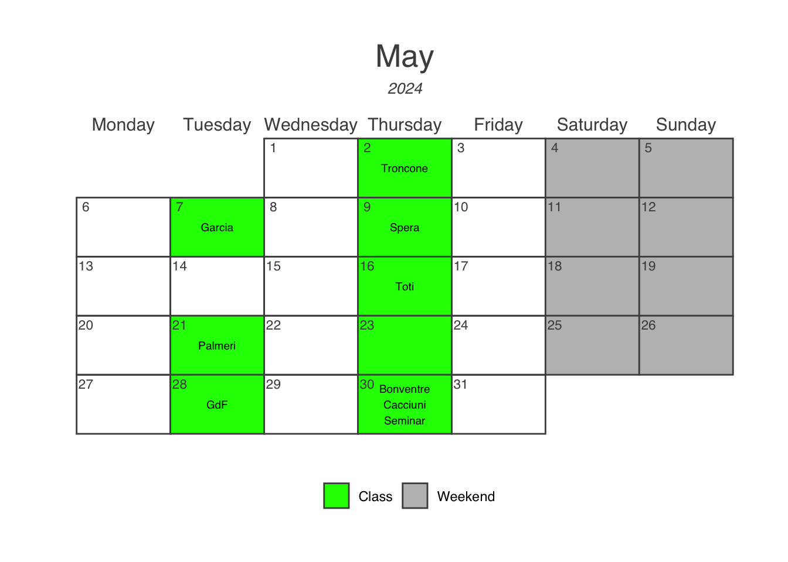

Calendar
- Below you will find a temptative schedule for the rest of the semester. When you see your name written in one of the class date that means that it is your turn to present the manuscript that has been assigned to you. Manuscript and dates have been assigned in a random way. Please, if you already know that you will not be present on the date that has been assigned to you let me know in time so that I can arrange a schedule change.

- The table below has the student’s name associated with the assigned paper